Figura 6: Conferencia Olga Taussky-Todd. Izquierda: Tomás Chacón y Françoise Tisseur. Derecha:
Françoise Tisseur al principio de su conferencia.
María Jesús Esteban
Expresidenta del ICIAM
CEREMADE – UMR 7534, CNRS Université Paris-Dauphine
Unos días después del final del congreso pienso en él, y me parece que han pasado meses. Es curioso lo largo que se hizo el llegar hasta allí, los preparativos, los sustos, las decisiones que tomar, las conversaciones por Skype, los montones de mensajes intercambiados sobre todo con Rosa y con Tomás. Parecía que el congreso no llegaría nunca, y los obstáculos eran tan numerosos…Y ahora ya pasó, y además tan rápidamente…
El hecho de conocer bien a los organizadores y hablar la lengua del país hizo que, aunque sólo presidenta del ICIAM, y no organizadora del congreso, me viera envuelta en muchas decisiones y en muchas discusiones, antes y durante el congreso, mucho más que lo que es normal en estos casos. Ha sido muy buena experiencia para mí, y sobre todo ha sido una gran suerte contar con el grupo de organizadores que ha tenido este congreso, totalmente entregados a su éxito, con una súper organización y con el apoyo total de la Universidad de Valencia y de su personal. Para mí, el congreso pasó muy rápido, casi sin darme cuenta. Entre reuniones, entrevistas, mesas redondas, etc., hacía lo que podía para lograr escuchar las más conferencias posibles. Elegirlas era difícil, porque el programa era rico, variado y muy atractivo. Hubo que tomar decisiones difíciles a la hora de elegir temas y conferenciantes. En conjunto me llevo la impresión de un montón de conferencias muy interesantes, tocando temas muy diversos y aplicaciones muy variadas de las matemáticas. Los conferenciantes de las conferencias invitadas y de los premios se esforzaron realmente en explicar sus resultados de forma agradable y comprensible para un público variado.
A veces tuve que sacrificar conferencias porque había una reunión, o había que responder a mensajes urgentes. Las interacciones con Rosa y Tomás continuaron a lo largo de toda la semana. Fue intenso, pero a pesar de ello, y sobre todo a partir del martes, sentí una gran tranquilidad al ver que todo se desenvolvía bien, que la gente parecía contenta, que la mecánica del congreso estaba funcionando perfectamente. Los cinco días del congreso pasaron casi sin darme cuenta, con las jornadas rimadas de forma mecánica por las reuniones cotidianas de los Officers de ICIAM en el desayuno, muchas citas, y luego, todos los días reuniones a la hora de comer. Las cenas también con colegas, medio de trabajo algunas, no todas, pero siempre muy agradables, y aprovechando con gran placer la excelente gastronomía de Valencia.
Han sido años de preparativos, meses de intensas discusiones, mucho trabajo, sobre todo para los organizadores. ¿Ha valido la pena tanto trabajo? Yo diría que sí, sin ninguna duda. Creo que ha sido una experiencia inolvidable para los que han invertido tiempo y energía en la organización. Ha sido muy agradable ver que los participantes estaban contentos, daban las gracias, sonreían.
España se ha situado con fuerza en el paisaje de la matemática aplicada en el ámbito internacional, de forma mucho más visible que anteriormente. El saber que todo ha salido bien, que la parte científica ha sido excelente y que el impacto mediático ha sido enorme es una fuente de satisfacción inmensa. Ahora hay que gestionar el final del congreso, pero sobre todo, en mi humilde opinión, hay que aprovechar para continuar con fuerza la construcción de una comunidad de matemáticos aplicados fuerte, unida, y con muchas ganas de hacer, de progresar, de avanzar, de atraer jóvenes, de continuar con las actividades hacia las empresas. Estoy convencida de que la comunidad de matemáticos aplicados españoles en general, y la SEMA en particular, saldrán fortalecidos de esta experiencia. Hay que continuar construyendo, avanzando, reforzando la comunidad, su visibilidad y su papel en la sociedad.
Muchas gracias a todos los que han contribuido al éxito del congreso. Gracias a la SEMA. No son gracias en nombre de ICIAM, son gracias mías, personales. Ha sido un gran placer para mí participar en esta gran aventura. Con un equipo tan magnífico y eficaz. ¡Muchas gracias!
Sebastià Xambó Descamps
Universidad Politècnica de Catalunya
Nota. Todas las fotos que se incluyen en esta sección, salvo que explícitamente se indique lo contrario, son de Sebastià Xambó Descamps.
La impresión general es que ICIAM 2019 fue un gran éxito en todos los sentidos. La gratitud hacia todas las personas e instituciones que lo hicieron posible es unánime. Este reconocimiento es ya superlativo para quienes pilotaron la nave de la organización durante luengos tiempos, con sus múltiples rutas y escalas, hasta llevarla a buen puerto.
El lunes 15 por la tarde tuvo lugar la ceremonia de entrega de los premios SEMA. Joaquim Serra, premio «Antonio Valle», no pudo asistir al acto y fue para mi un honor que me pidiera recoger el diploma en su nombre (figura ??, izquierda). Mi función terminó con la lectura de las palabras que me envió para la ocasión. Por su interés, las consigno a continuación:
Con este premio recojo el fruto de muchas personas que han tenido un papel importante en mi formación. Quisiera destacar singularmente a Josep Grané y a mi director de tesis, Xavier Cabré, ambos profesores de la Universitat Politècnica de Catalunya. Les estoy muy agradecido por su importante implicación en mi formación al inicio de mi carrera y podría decirse que gran parte del premio se debe a ellos.
Además, y como la investigación matemática es una actividad colaborativa, aprovecho la ocasión para agradecer también a todas las personas con las que he trabajado, escrito artículos, y discutido matemáticas. He sido muy afortunado de poder colaborar y aprender de mucha gente extraordinaria. Además de Xavier Cabré, Alessio Figalli, Xavier Ros, Sylvia Serfaty, Luis Caffarelli; entre otros.
Finalmente, quiero agradecer otra vez a la SEMA su dedicación y fomento de la investigación y la ciencia, y en particular sus esfuerzos por promover y estimular a los jovenes investigadores. Reconocimientos como este nos animan a continuar trabajando intensamente y nos dan confianza para perseguir objetivos cada vez mas ambiciosos.
Joaquim Serra ha sido galardonado con el premio José Luis Rubio de Francia 2018. En la figura ??, derecha, aparece en un instante de la mañana del 1 de agosto, en el jardín de la Facultat de Matemàtiques i Estadística de la UPC, junto con los miembros del equipo destacado por la FBBVA para entrevistarle y elaborar material fotográfico para la ceremonia de entrega del premio el próximo día 3 de octubre.
Aunque el autor de estas líneas ha sido miembro de la comisión promotora de ICIAM 2019 desde el principio, no fue hasta la conferencia AGACSE 2018 (23-27 julio, Campinas, Brasil), que ya había sido aceptada como satélite,1 en que fue consciente de que el partido había empezado. Había ayudado en la organización de AGACSE 2018, a raíz de haber organizado la conferencia previa, AGACSE 2015 (27-31 julio, Barcelona),2 y luego aceptó la invitación de presidir el Comité Científico.
En una charla con algunos participantes al final de AGACSE 2018, y en particular con el responsable de la organización local, Carlile Lavor, que a la sazón había sido elegido para presidir la Sociedad Brasileña de Matemática Aplicada y Computacional, la idea de solicitar la organización de un minisimposio en ICIAM-2019 fue aceptada. El título que nos aglutinó, Sistemas, patrones e ingeniería de datos con cálculos geométricos, fue el que se propuso y el que fue aprobado.
El minisimposio se celebró el martes 16 de julio con el programa que resume el Cuadro ??. Es un buen momento para dar cuenta de la facilidad con que los coordinadores pudieron hacer su labor gracias al perfecto funcionamiento del sistema informático para acceder sin demoras a los sucesivos archivos de presentación de los conferenciantes.
| 11:00 | SX | Geometric Calculus Techniques in Science and Engineering |
| 11:30 | IZ | Bringing New Perspectives to Robotics and Computer Science |
| 12:00 | CL | Geometric Algebra and Distance Geometry |
| 12:30 | SV | Embedded Coprocessors for Native Execution of GA Operations |
| 14:30 | SL | Hypercomplex Algebras for Art Investigation |
| 15:00 | SV | Conformal Geometric Algebra for Medical Imaging |
| 15:30 | UM | Geometric Bio-Inspired Deep Learning |
| 16:00 | SX | Geometric Calculus Meets Deep Learning |
Dejo para el final los comentarios sobre el contenido y significación de este minisimposio para referir otro de los aspectos de ICIAM 2019 en los que pude aportar otro granito de arena. Se trata de los resúmenes para la NL del Congreso que coordinó Carlos Castro. Además de él, también contribuyeron María Paz Calvo, Julio Moro y Francisco Pla. Me fueron asignadas cinco conferencias, escogidas entre las que tenía previsto asistir, pero las circunstancias quisieron que solo pudieran publicarse las notas sobre las de Marsha Berger, Kristin Lauter y Marcelo Viana (figura ??), pero no las de Françoise Tisseur (Conferencia Olga Taussky-Todd) ni de Victor M. Pérez-García (Conferencia pública). A continuación consigno las traducciones al castellano de los resúmenes publicados y más abajo comentaré las dos conferencias cuyos resúmenes no lo fueron.
Berger. La conferencia plenaria de Marsha Berger (Courant Institute, NYU), con el título «Progress in the Modelling of Asteroid-Generated Tsunamis», fue impartida en el Aula Magna de la Facultad de Medicina (edificio ME) el miércoles 17 de 09:30 a 10:15. Atrajo a muchos participantes que gozaron con las claras pantallas, el estilo y efectividad de su oratoria, y los sofisticados modelos que presentó. Todos quedaron encantados con las simulaciones dinámicas que mostró relativas a intrigantes casos reales.
Lauter. Sí, existe una solución práctica para garantizar la privacidad de nuestros datos en este nuestro mundo alojado en la nube. Este fue el principal titular de la intervención de Kristin Lauter (Microsoft Research y University of Washington) en su conferencia plenaria «Inteligencia artificial privada» impartida el jueves 18 de julio, de 11:00 a 11:45, en la Carpa de la Facultad de Actividad Física y Deportes. Adoptó la opinión pragmática de que la inteligencia artificial es el arte de hacer predicciones útiles mediante algoritmos de aprendizaje automático y argumentó que las predicciones que involucran datos privados pueden mantenerse privadas de forma segura mediante las versiones recientes de los esquemas criptográficos homomórficos.
Viana. Su papel fundamental en el análisis numérico es solo una de las muchas caras de la teoría de los exponentes de Lyapunov que Marcelo Viana (IMPA, Río de Janeiro) examinó en su conferencia plenaria el viernes 19 (8:30 a 9:15) en el Saló d’Actes de la Facultad de Filología, Traducción y Comunicación (edificio FT). Mención especial merecen dos resultados profundos y sobresalientes con Arthur Avila (Medalla Fields 2014) obtenidos en 2010: el «principio de invariancia» y el «teorema estable de Bernoulli». Otro aspecto notable de la conferencia fue la formulación de muchos problemas abiertos. Jesús Sanz-Serna, presidente de la Real Academia de Ciencias Exactas, Físicas y Naturales, presidió la sesión. Para los lectores que deseen saber más: M. Viana, Lectures on Lypunov exponents, Cambridge Studies in Advanced Mathematics, 145, Cambridge University Press, 2014.
Tisseur. La primera conferencia plenaria fue la «Olga Taussky-Todd Lecture». La impartió Françoise Tisseur (School of Mathematics, University of Manchester) en el «Valencia Conference Center», a las 12:30, después del descanso que siguió a los actos de inauguración, con el título «Challenges in the numerical solution of nonlinear eigenvalue problems» (figura ??). No apareció ningún resumen, ya que el lunes fue un día densísimo que no me dejó tiempo libre para escribirlo antes del (temprano) cierre de la edición. Afortunadamente, las pantallas que presentó se pueden encontrar en https://www.maths.manchester.ac.uk/~ftisseur/talks/FT_ICIAM19.pdf.
Pérez-García. El mensaje básico de su conferencia pública (18 de julio, Palau de les Arts, 19:45) fue que los modelos matemáticos y los métodos computacionales son hoy indispensables en todos los frentes de la investigación bio-médica, y más particularmente en oncología. En su conferencia, titulada ¿Pueden las matemáticas ayudar en la lucha contra el cáncer?, intercaló intervenciones de Luis Pérez Romasanta, de la Unidad de Oncología de Radiación de la Universidad de Salamanca, y de Estanislao Arana, de la Unidad de Radiología del Instituto Valenciano de Oncología, quienes concretaron la idea principal en términos de las problemáticas de sus especialidades (figura ??). La sala del Palau de les Arts estaba al completo y las numerosas preguntas de los asistentes subrayaron el gran interés que el evento había suscitado. Victor M. Pérez-García es director del Laboratorio de Oncología Matemática y miembro del Instituto de Matemática Aplicada a la Ciencia y la Ingeniería, ambos de la Universidad de Castilla-La Mancha.
Vuelvo al tema del minisimposio. Las dos últimas contribuciones fueron conjuntas con Eduardo Ulises Moya y se pueden encontrar en
M7: https://mat-web.upc.edu/people/sebastia.xambo/ICIAM2019/GC&DL-07.pdf
M8: https://mat-web.upc.edu/people/sebastia.xambo/ICIAM2019/GC&DL-08.pdf
La presentación M8 tiene dos partes, A y B. La parte A quiere ser una sinopsis de lo que es el aprendizaje algorítmico usual mientras que la B explora las posibilidades que se presentan cuando los números reales son substituidos por los números complejos, o por los cuaterniones de Hamilton, o por otras álgebras que han demostrado su eficacia en otros terrenos, como por ejemplo la física matemática, la robótica, o la geometría molecular (v.
M1: https://mat-web.upc.edu/people/sebastia.xambo/ICIAM2019/GC&DL-01.pdf
y las referencias que allí se indican).
Para el futuro inmediato, la previsión es publicar un volumen en la colección SEMA-SIMAI de Springer con capítulos correspondientes a los del minisimposio junto con unos pocos capítulos de otros investigadores que no pudieron asistir al Congreso y que reforzarán el valor pluridisciplinar de las líneas de trabajo que se sugieren.
Terminamos con una de las imágenes mostradas al final de la conferencia pública de Victor M. Pérez-García, pues resulta agradable pensar que se puede aplicar a nuestros sueños.
_____________________________________ ◇◇◇_____________________
Jesús Ildefonso Díaz Díaz
Universidad Complutense de Madrid y Real Academia de Ciencias
_____________________________________
No cabe duda de que cada uno de los varios miles de participantes en el pasado ICIAM, celebrado en Valencia del 15 al 19 del pasado mes de julio, habrá tenido sus propias motivaciones y expectativas, cada uno habrá conformado las peculiaridades de su participación en función de sus temas de especial interés, sus circunstancias personales, etc. Siendo esto así, el nivel de satisfacción y sus impresiones finales tras el congreso difícilmente podrán coincidir con las de tantos otros participantes a este evento que sin duda queda registrado para siempre de manera muy excepcional en la historia del desarrollo de la Matemática Aplicada española. Recordando que el documento PDF titulado Program & Abstracts Book, accesible a los participantes, contaba con 584 páginas, el lector podrá entender fácilmente que cualquier comentario al respecto será necesariamente muy parcial y fruto de las impresiones individuales de quien escriba esos comentarios.
En mi caso, no puedo comenzar el relato de mis impresiones antes de elogiar la labor encomiable de tantos colegas de nuestro país: en primer lugar la de los que lograron, hace ya varios años, que la celebración del ICIAM se produjera en 2019 en España, la de los que intervinieron en los muchos comités y en especial la de los que diseñaron la lista de los conferenciantes invitados, la de los que tuvieron privilegiado acceso al proceso de concesión de los premios, la de los que resaltaron la importancia de este singular evento proponiendo y celebrando los congresos satélites planteados con este motivo y desarrollando una cantidad impresionante de actos paralelos de carácter más público y de divulgación. Y como no, muy especialmente, mi personal reconocimiento va dirigido también a todos los organizadores locales que lograron que la celebración fuera un gran éxito.
Pero esos sentimientos de reconocimiento, probablemente comunes a todos los que tuvimos la suerte de participar en este ICIAM, van acompañados en mi caso de un recuerdo que vino a mi mente ya desde que se conoció que la celebración del 2019 se otorgaba a los proponentes que representaban a la Matemática Aplicada española. Mi participación en el ICIAM tuvo la peculiaridad de conjugar algunos de mis intereses científicos presentes (organicé un Minisymposium, con dos jornadas de desarrollo, con Juan Luis Vázquez, de título Trends in nonlocal PDEs) con los de un recuerdo constante a los valores morales y científicos que, para un reducido número de personas entre las que me encuentro, acapararon tan intensamente, durante muchos años, unas energías y dedicación a la labor de crear en nuestro país una sólida comunidad de matemáticos con unos intereses comunes y diferenciadores de otros colectivos matemáticos que parecían responder a otros intereses diferentes.
Al igual que una quincena de compañeros, tuve el gran privilegio de tener a Alberto Dou como Director español de mi tesis desde incluso antes de finalizar mi licenciatura en 1973. Dou nos inculcó (y eso era muy lejos de ser habitual en nuestro país en esas fechas) un gran valor por la comunicación entre especialistas y en particular propició la asistencia a congresos internacionales y especializados. Él predicaba con su ejemplo, pues en 1984 me comentó que desde que acabó su tesis doctoral en 1952 había asistido a todos los congresos ICM celebrados hasta entonces. Mi experiencia personal de participación en congresos se inició con las Jornadas Matemáticas Hispano Lusas (organizadas por A. Valle), en Sevilla, en abril de 1974 y que tenían como gran aliciente el tener a J. L. Lions como uno de los conferenciantes plenarios. Participé después en la XII Reunión Anual de Matemáticos Españoles (organizado por F. del Castillo) celebrado en Málaga, en septiembre de 1976. Personalmente, el mejor recuerdo de ellas es haber contactado con varios especialistas de otras universidades tales como Bermúdez de Castro, Simó, Perelló, Sanz-Serna y algunos otros más que coincidíamos en observar la falta de intercambio científico efectivo que se venía dando en ese tipo de reuniones en las que la celebración de recepciones oficiales y la jornada turística y social organizada al respecto eran casi los eventos que movilizaban a mayor número de gente. Se podía apreciar la casi total ausencia de contribuciones de especialistas de distintas universidades y, por supuesto, de diferentes países.
Simultáneamente, en esos mismos años, mi otro director de tesis, Haïm Brezis (en ese momento en la Universidad de París VI) me venía animando y facilitando participar en congresos internacionales que él consideraba relevantes para mi formación. Mi primera experiencia al respecto fue el International meeting on nonlinear monotone operators, celebrado en Bruselas (organizado bajo los auspicios de la OTAN), del 11 al 30 de septiembre de 1975, al que siguieron muchos otros congresos. Pude comprobar en primera persona la radical diferencia de aquel congreso con los que se venían celebrando en nuestro país.
Pese a que no existía aún Internet, muchos de los que habíamos coincidido en Sevilla y Málaga mantuvimos un estrecho contacto y pensamos que era el momento de lanzar un congreso pequeño limitado a especialistas con unos intereses matemáticos más cercanos y en el que los aspectos formales (de recepciones oficiales y demás) fueran minimizados en aras de un mayor intercambio científico. Fue así como A. Casal, M. Lobo, J. Hernández y yo organizamos en El Escorial, del 29 al 31 de mayo de 1978, el Congreso de Ecuaciones Diferenciales y Aplicaciones (que luego pasó a ser reconocido por sus siglas CEDyA). El éxito de tal reunión condujo a que nuestro colegas catalanes (C. Perelló, y C. Simó), organizaran una continuación de este tipo de reuniones, esta vez en Valldoreix (Barcelona), del 28 al 31 de mayo de 1979, y surgió así la necesidad de que tales eventos llevaran un número para indicar un orden cronológico. Aquel ya era el II CEDyA. En 2020 el CEDyA celebrará su XXVI edición en Gijón (desde hace ya mas de treinta años el congreso comparte otro título de ámbito más general, y así el del año próximo será también el XVI Congreso de Matemática Aplicada).
Valgan todos estos detalles previos para volver sobre mis impresiones personales del ICIAM de Valencia. Es ahora obvio que los valores que pretendíamos instaurar y potenciar al organizar los primeros CEDyA han cristalizado y han sido superados con creces con la celebración de este ICIAM. Además, recordar ahora el lento y complicado proceso de como el éxito de los CEDyA nos llevó a crear nuestra sociedad SeMA y ver una vez más la foto del acto de inauguración en el que Felipe VI aparece con el logotipo de la SeMA sobre su cabeza me produce emociones personales difíciles de plasmar en unas líneas.
Aquella peculiar e, las razones para que apareciese en minúscula (que ya he desvelado en alguna otra ocasión), aquel tipo de letra, y hasta el color del logotipo, pasaron por mis manos y fueron diseñados conjuntamente con el publicista José Esteban Prieto, en su Estudio de la calle entonces llamada General Yagüe (ahora San Germán) de Madrid, cercana al estadio Bernabéu.
Muchas otras impresiones vinieron a mi cabeza durante los días de celebración del ICIAM. Por ejemplo, viví con gran satisfacción personal que Claude Bardos (Université Paris Denis Diderot) fuera distinguido con el ICIAM Maxwell Prize. Recordé los primeros contactos con él, allá por los setenta, alguna velada en su casa y, sobre todo, las labores que llevamos a cabo (conjuntamente con A. Damlamian y J. Hernández) como organizadores del Primer Coloquio Franco Español sobre Ecuaciones en Derivadas Parciales No Lineales que se celebró en Madrid del 14 al 18 de diciembre de 1981. Me alegré muchísimo de que Alfredo Bermúdez de Castro fuera distinguido como conferenciante plenario. Me hizo recordar que si bien no quisimos poner la inicial I (de Industrial) en el acrónimo de nuestra sociedad española, SeMA (a diferencia de las sociedades norteamericana SIAM, francesa SMAI, e italiana SIMAI), ante la casi total ausencia de experiencia en los años ochenta, ahora sí que podría ser oportuna, entre otras cosas por el inmenso trabajo desplegado por Alfredo y su activa escuela creada en Galicia, responsable de admirables relaciones y contratos con numerosas industrias.
Me interesó muy especialmente la conferencia plenaria impartida por Claude Le Bris (École des Ponts & Chaussées e INRIA, París) sobre Homogenization of materials with defects. Coincidí con Claude en un workshop organizado por Alfredo Bermudez en Castro-Urdiales en el 2010. Su conferencia, tras la presentación del orador por Juan Luis Vázquez, fue muy brillante abordando muchos puntos de vistas diferentes sobre este tema tan candente en nuestros días y todo ello resaltando de manera inteligentemente cuidada las astutas respuestas ante las dificultades presentadas. Además, Claude fue uno de los alumnos más distinguidos de Pierre-Louis Lions, con el que además de ser coautor, tuve la ocasión de organizar el Segundo Coloquio Franco Español sobre Ecuaciones en Derivadas Parciales no lineales celebrado en París del 14 al 21 de diciembre de 1985.
Otra conferencia plenaria que me interesó especialmente fue la de P. E. Souganidis (actualmente en la Universidad de Chicago) sobre Nonlinear Stochastic Partial Differential Equations. Le conocí en Madison-Wisconsin en 1981 cuando él estaba comenzando su tesis con M. G. Crandall, quien me invitó al legendario Mathematical Research Center de septiembre a noviembre de 1981. Se pudieron apreciar en su conferencia los problemas más complejos y actuales sobre este tema de gran desarrollo y porvenir. Entre otras muchas cosas, pudimos conocer que él está preparando un libro sobre el tema en colaboración con Pierre-Louis Lions.
Me he de referir también al propio Minisymposium sobre nonlocal PDEs organizado con Juan Luis Vázquez. La motivación que nos movió en su momento para proponer su celebración no fue solo por nuestros trabajos sobre el tema (en particular, hemos concluido no hace mucho tiempo, un trabajo conjunto en colaboración con David Gómez-Castro) sino también por el hecho de que ambos fuimos Presidentes de la SeMA y nos parecía que estábamos moralmente obligados a tomar parte activa en el congreso en el que nuestra Sociedad era la gran protagonista. El tema de las ecuaciones en derivadas parciales no locales (fraccionarias, estocásticas, etc.) ya es una de las direcciones de investigación que está recibiendo más atención en nuestros días. Buena prueba de ello es que hubiese varios otros Minisymposia dedicados a esos mismos temas (desgraciada e inevitablemente con solapamiento de horarios). Nuestro Minisymposium ofreció un panorama actual, bastante completo, de los avances de los especialistas en el campo con intervenciones de jóvenes muy distinguidos como Xavier Ros-Oton, Matteo Bonforte, Diana Stan, Félix del Teso y David Gómez-Castro. Ese solapamiento de horarios que he mencionado antes no es más que una pequeña muestra de la «sensación de no poder abarcarlo todo» que evidentemente venía a la mente de todos los que participamos en este ICIAM. Pero, por otro lado, comparando con aquellas otras sensaciones de mis comienzos, yo exclamaría ¡¡bendita sensación!!
Me resultó muy grato participar en la asamblea anual de la SeMA que llevamos a cabo en el estrecho margen entre conferencias durante el almuerzo. La solución brindada por los organizadores valencianos me pareció muy ingeniosa y enormemente eficiente. No recuerdo haber celebrado reunión oficial alguna a la vez que los participantes almorzábamos in situ. Entre los muchos temas tratados se abordó el prefijar con detalle el logotipo de la Sociedad, aprobándose una versión actualizada que era muy respetuosa con el logotipo inicial.
No quiero alargar más este escrito, pero podría dar testimonio también de cómo presencié el origen de nuevos contactos entre participantes de diferentes países (en la misma sala en la que se celebraba nuestro Minisymposium pero cuando se abordaban temas relacionados con métodos asintóticos en Elasticidad). Podría resaltar la gran satisfacción de encontrar antiguos coautores (recuerdo gratamente la comida con Carlos Conca y con Daniela Giachetti) y hasta incluso la alegría de reencontrar a antiguos alumnos de tesis actualmente dispersos por la geografía nacional (Gonzalo Galiano) e internacional (Iván Moyano). Me parece que merece también mención la loable cantidad de energía desplegada en la planificación y realización de las actividades paralelas (¡¡chapeau por todos ellos!!), de los congresos satélites (yo participé en la International Conference Challenges in Mathematical Architecture. Theory, Modelling and Applications, organizada por J. F. Padial en la UPM, del 11 al 13 de julio) y tantas otras actividades que se podrían mencionar con motivo del ICIAM.
En suma, me alegro mucho del éxito de todos y me alegro de haber podido estar presente en tan singular acontecimiento que ha tenido la naturaleza de gran hito difícilmente repetible. Me reconforta pensar que las generaciones venideras de matemáticos aplicados españoles encontrarán un panorama muy diferente al que muchos de nosotros encontramos en nuestros comienzos.
_____________________________________ ◇◇◇_____________________
Francisco Marcellán Español
Universidad Carlos III de Madrid
____
Mi reflexión personal sobre el ICIAM 2019 se va a centrar en la respuesta institucional a un evento matemático de primer rango que se ha celebrado por primera vez en España y que ha exigido un esfuerzo colectivo desde el punto de vista organizativo por parte de la SEMA, pero también con la complicidad de la comunidad matemática española, que no solo debe reconocer el trabajo bien hecho desde el comité organizador sino debe enorgullecerse por la respuesta dada a este importante reto.
El papel de la matemática aplicada e industrial como elemento dinamizador del conocimiento matemático y su transferencia al sector productivo ha sido puesto de manifiesto en el reciente estudio sobre el impacto socioeconómico de la investigación y la tecnología matemáticas en España elaborado por la Red Estratégica de Matemáticas (REM) y presentado públicamente en abril de 2019 en Madrid. Este sobresaliente ejercicio de reflexión sobre la naturaleza de las matemáticas como bien semipúblico ha servido no solo internamente para la comunidad matemática sino que constituye un instrumento de conocimiento y acción para los agentes del sistema productivo tanto públicos como privados. Esa dimensión ha sido reforzada en el ICIAM no solo a través del programa científico sino mediante el exitoso Industry Day.
La involucración de instituciones locales (Ayuntamiento de Valencia), autonómicas (Generalitat Valenciana) y nacionales (Ministerio de Ciencia, Innovación y Universidades) se reflejó en el acto inaugural con la presencia de S. M. Felipe VI, que pronunció un discurso en un impecable inglés y con un contenido que fue objeto de una valoración más que positiva por parte de los asistentes al acto. La presencia de autoridades en el acto inaugural se reflejó mediáticamente impulsada por la presencia de Felipe VI, aunque no dejó de ser curioso que la portada de la prensa local al día siguiente fue el encuentro del rey con futbolistas y directivos del Valencia CF con motivo del centenario del club. No obstante, hay que resaltar la información sistemática a lo largo de la semana por parte de los diferentes medios de comunicación tanto locales como nacionales y el papel que jugó la Newsletter como elemento informativo no solo para los asistentes sino también para el público en general.
El antes de dicha ceremonia fue la búsqueda de apoyos en los tres ámbitos señalados anteriormente, con una filosofía de cada cual según sus disponibilidades y posibilidades para abordar las necesidades organizativas del ICIAM en un marco político y económico plagado de incertidumbres. Me gustaría resaltar la falta de planificación plurianual para la financiación de este evento por parte del ministerio competente en temas de investigación (pese a que eran conocedores de su importancia desde hace más de cuatro años) lo que implicó reuniones con responsables ministeriales, la presentación de una Proposición No de Ley en el Congreso de los Diputados, tras entrevistas con los portavoces de los diferentes grupos parlamentarios, y la constatación de que la proyección y presencia internacional de la ciencia y la tecnología españolas no son prioridades en la agenda política más allá de las declaraciones rimbombantes en periodos electorales.
Creo que lo más importante es el aprovechamiento del éxito organizativo y científico del ICIAM 2019, esa poscelebración, que debería impulsar el rol de la matemática aplicada e industrial como valor añadido no solo socioeconómico sino como reflejo de la diversidad y carácter multidisciplinar del conocimiento matemático. En segundo lugar, presentar una visión de una comunidad científica consistente y coherente con objetivos que van más allá de su visión interna sino de su compromiso con el progreso de nuestro país y que demanda una actitud proactiva no solo con el sector productivo sino también con las entidades de carácter público que gestionan la política científica y tecnológica a las que debemos exigir visiones a medio y largo plazo, estabilidad en las políticas, financiación acorde con los objetivos y, sobre todo, poner en valor la excelente ciencia y tecnología que se genera en nuestro país. Finalmente, avanzar en el compromiso colectivo de sociedades matemáticas, universidades e institutos de investigación por hacer más potente y eficiente nuestra tarea en unos momentos en que las matemáticas son objeto de atención en el ámbito nacional e internacional y que nos deben llevar a no perder el tren de un liderazgo intelectual cuyo sustento es fruto de un trabajo continuado a lo largo de los últimos treinta años.
_____________________________________ ◇◇◇_____________________

De izquierda a derecha, Tomás Chacón, S. M. Felipe VI y María Jesús Esteban.
Autoridades asistentes al acto de apertura. El rey Felipe acompañado de la presidenta de ICIAM,
María Jesús Esteban, Ximo Puig, presidente de la Generalitat Valenciana, Pedro Duque, ministro de
Ciencia, Innovación y Universidades, y Joan Ribó, alcalde de Valencia.
Eduardo Casas Rentería
Universidad de Cantabria
____________
Cuando Tomás Chacón me pidió formar parte de la organización del ICIAM 2019, acepté sin dudarlo porque me pareció un evento muy importante para la Matemática Aplicada en España y porque consideré que podía y debía ayudar en esta tarea. Se me asignó la responsabilidad del Comité de Finanzas. Desde este puesto debía vigilar los ingresos y gastos correspondientes a la organización y desarrollo del ICIAM.
Mi principal preocupación siempre fue tener los ingresos suficientes para que el congreso se desarrollase con éxito no solamente desde un punto de vista científico sino también facilitando y haciendo agradable la participación de los ponentes y satisfaciendo las aspiraciones del Consejo de ICIAM, que presidía María Jesús Esteban. Y el comienzo no pudo ser más satisfactorio. En efecto, en marzo de 2015, el Banco de Santander nos asignó 232.500 euros para el desarrollo y ejecución del proyecto. Este dinero estaba destinado casi integramente a becas para los participantes. Además la Universidad de Valencia nos ofrecía sus aulas sin coste alguno para nosotros. En este ambiente optimista comenzamos a trabajar.
Poco después solicitamos al Ministerio una ayuda para cubrir gastos derivados de nuestras reuniones de organización (viajes y hoteles). La petición fue denegada y cada uno de nosotros tuvo que buscar financión en sus respectivos departamentos o grupos para cubrir estos gastos. Con el paso de los meses el optimismo inicial se fue apagando porque no conseguíamos financión de empresas privadas y el Ministerio sistemáticamente nos negaba una subvención para organizar el congreso. Solamente parecía que podíamos contar con pequeñas aportaciones de la Comunidad Valenciana y el Ayuntamiento de Valencia. En consecuencia, un balance contable positivo dependía exclusivamente de una alta participación de ponentes en el congreso. Aunque teníamos cierta esperanza de que esto fuera así, no había certeza alguna, lo que comenzó a preocuparme de forma importante. Mis compañeros del Comité Ejecutivo pueden dar fe de mi preocupación y mis propuestas de contención del gasto. Sin embargo, en los últimos meses previos a la celebración del congreso la situación cambió de forma importante: el número de inscripciones era muy alto y finalmente el Ministerio decidió apoyar económicamente el proyecto.
Recuperado el optimismo, llegamos a Valencia para participar en el congreso. En la sesión de apertura, la actuación del Rey fue extraordinaria en el escenario y en el hall del Palacio de Congresos, donde estuvo largo rato departiendo con los asistentes. A partir de ahí todo comenzó a desarrollarse con tranquilidad para los participantes, no tanto para Rosa Donat y su Comité Local de organización que tuvieron un arranque complicado, inevitable.
Como participante en el congreso, he de decir que todo fue sencillo, sin problema alguno y con gran satisfacción para todos los participantes de nuestro minisimposio.
Aunque todos trabajamos para que el resultado fuera satisfactorio, y todavía tenemos trabajo por delante, he de destacar el enorme trabajo realizado por Tomás Chacón y Rosa Donat. A ellos les debemos un agradecimiento especial.
_____________________________________ ◇◇◇_____________________
Francisco Ortegón Gallego
Universidad de Cádiz
_______________
Esta sección está dedicada a ofrecer un testimonio gráfico3 de los veintinueve conferenciantes invitados al ICIAM 2019 (incluyendo la conferencia Olga Taussky-Todd y la conferencia pública de carácter divulgativo), los cinco galardonados de un premio ICIAM 2019 y cuatro premios de la SIAM.
La organización del ICIAM 2019 abarcó la realización de actividades propias de sociedades matemáticas de otros países. En particular, el congreso anual de la SIAM tiene lugar dentro del ICIAM cada vez que coincide con el año de celebración de éste. La SIAM concede anualmente varios premios cuya ceremonia de entrega se realiza justamente en los congresos anuales de esta sociedad. En este ocasión, la SIAM hizo entrega de cuatro premios dentro del ICIAM de Valencia, a saber:
Premio SIAM 2019 por servicios distinguidos en la labor profesional Maria Jesús Esteban (Université Paris-Dauphine, Francia).
Premio Peter Henrici SIAM 2019 Weinan E (Princeton University, USA), Machine Learning: Mathematical Theory and Scientific Applications.
Premio John von Neumann SIAM 2019 Margaret H. Wright (Courant Institute of Mathematical Sciences, New York University, USA), A Hungarian Feast of Applied Mathematics.
Premio Conferencia Sonia Kovalevsky AWM-SIAM 2019 Catherine Sulem (Courant Institute, NYU, New York, USA), The Dynamics of Ocean Waves.
Pero además, la SIAM incluyó entre sus actividades la entrega de las distinciones SIAM fellowships 2019 a los profesores galardonados que asistieron al ICIAM (figura ??), entre los que había, como ya fue anunciado en el Boletín 22 del pasado abril, dos socios españoles de la SEMA: José Antonio Carrillo de la Plata (Imperial College London), Stephen Jonathan Chapman (University of Oxford), Wolfgang A. Dahmen (University of South Carolina), Froilán C. Martínez Dopico (Universidad Carlos III de Madrid), Fariba Fahroo (Air Force Research Laboratory), Gitta Kutyniok (Technische Universität Berlin), Juan C. Meza (University of California Merced), y Jill C. Pipher (Brown University).
1. Marsha Berger.
2. Alfredo Bermúdez de Castro.
3. Peter Bühlmann.
4. Carlos Conca. Izquierda, Carlos Conca presentado por Luis Vega.
5. Wolfgang Dahmen.
6. Hans de Sterck.
7. Leah Edelstein-Keshet.
8. Isabelle Gallagher.
9. Omar Ghattas.
10. Donald Goldfarb.
11. Thomas A. Grandine.
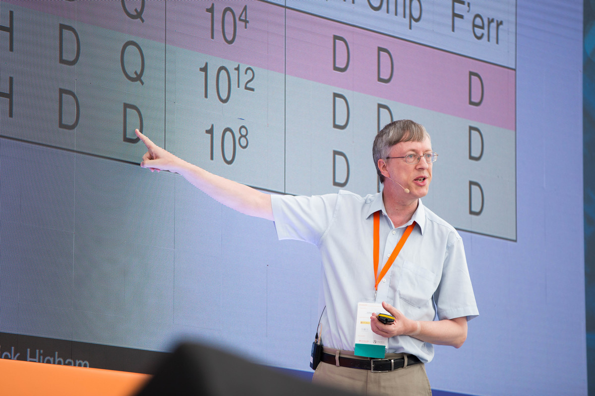 12. Nicholas J. Higham.
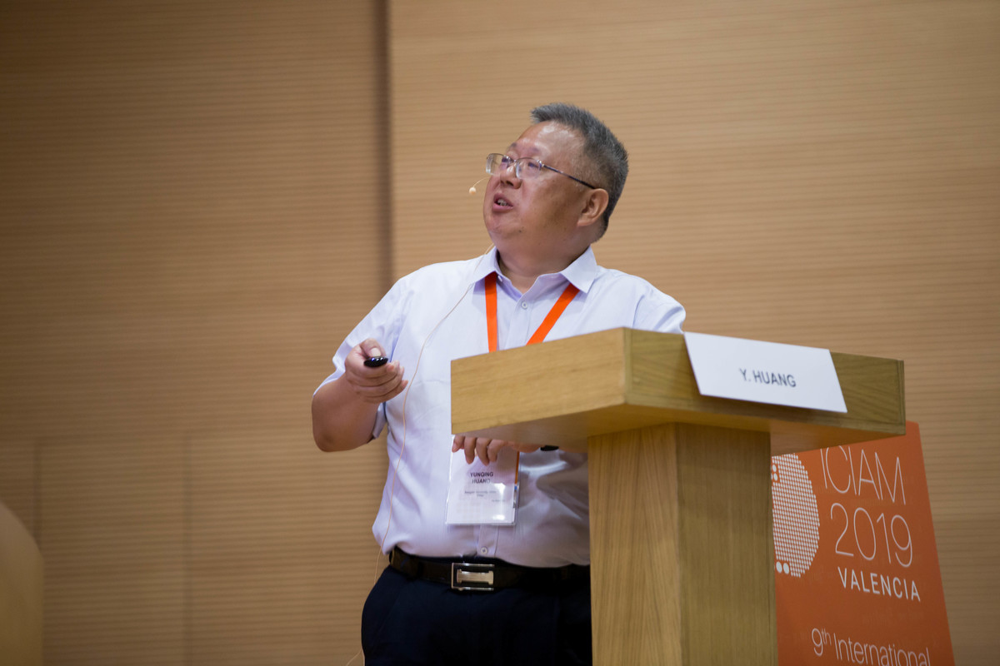 13. Yunqing Huang.
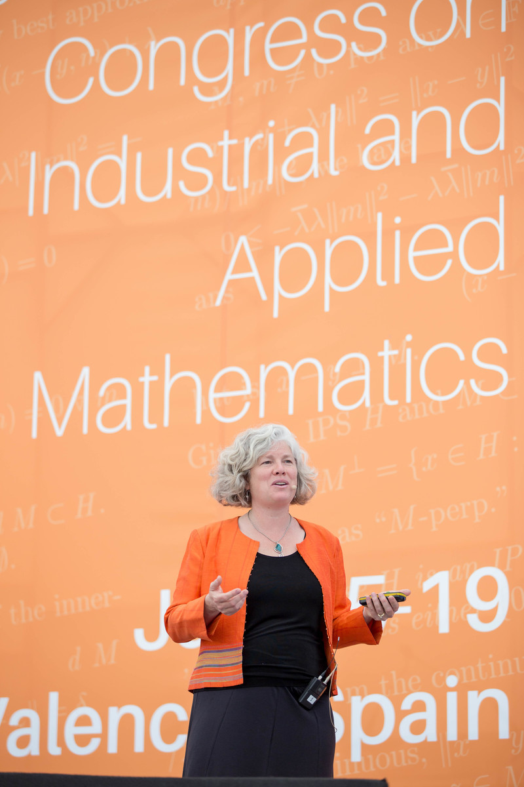 14. Kristin Lauter.
 15. Claude Le Bris.
15. Claude Le Bris.
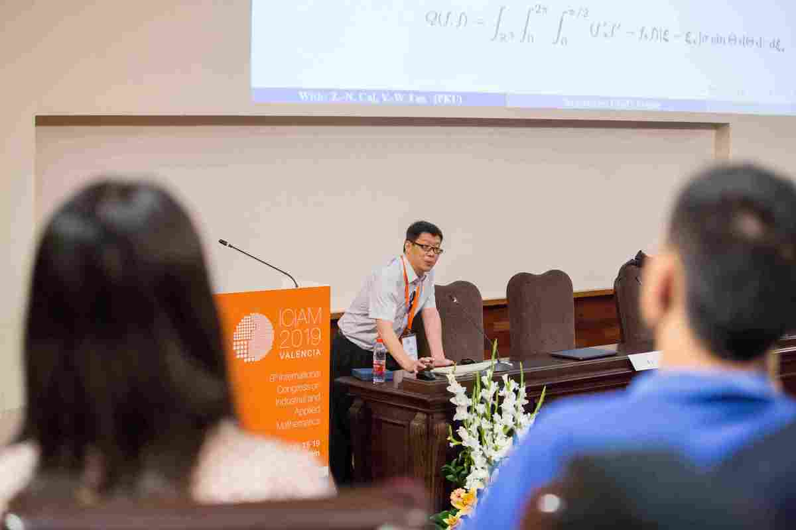 16. Ruo Li.
17. Kazue Sako.
18. Sylvia Serfaty.
19. James Sethian.
20. Panagiotis E. Souganidis.
21. Hiroshi Suito.
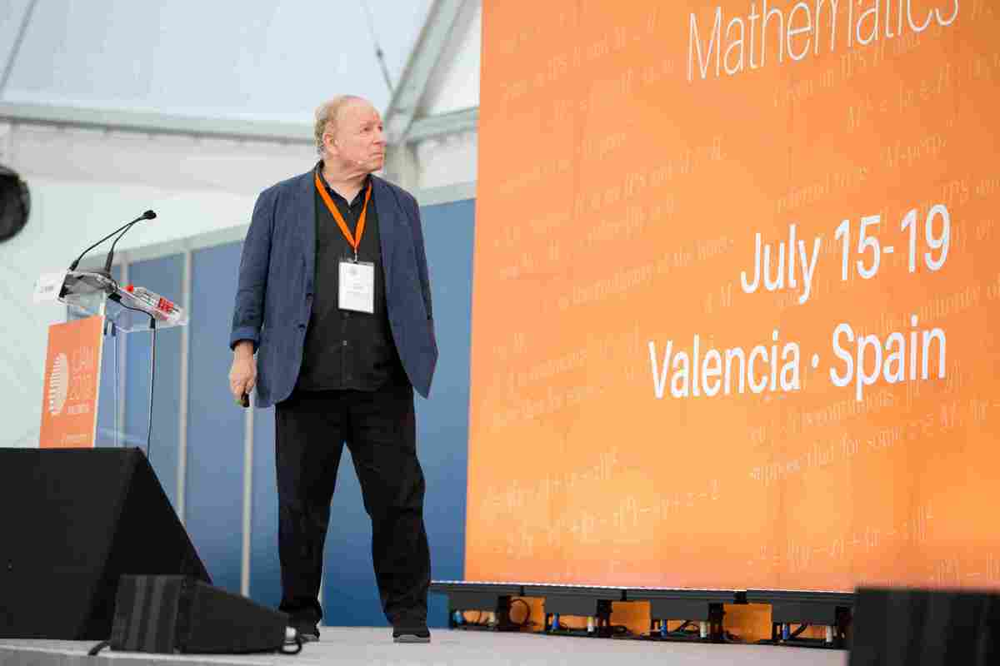 22. Eitan Tadmor.
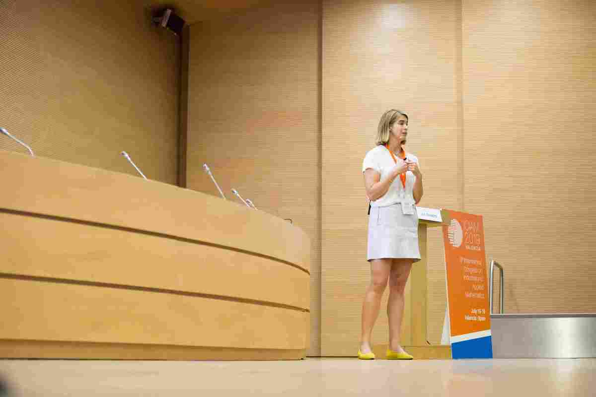 23. Anna-Karin Tornberg.
24. Marcelo Viana.
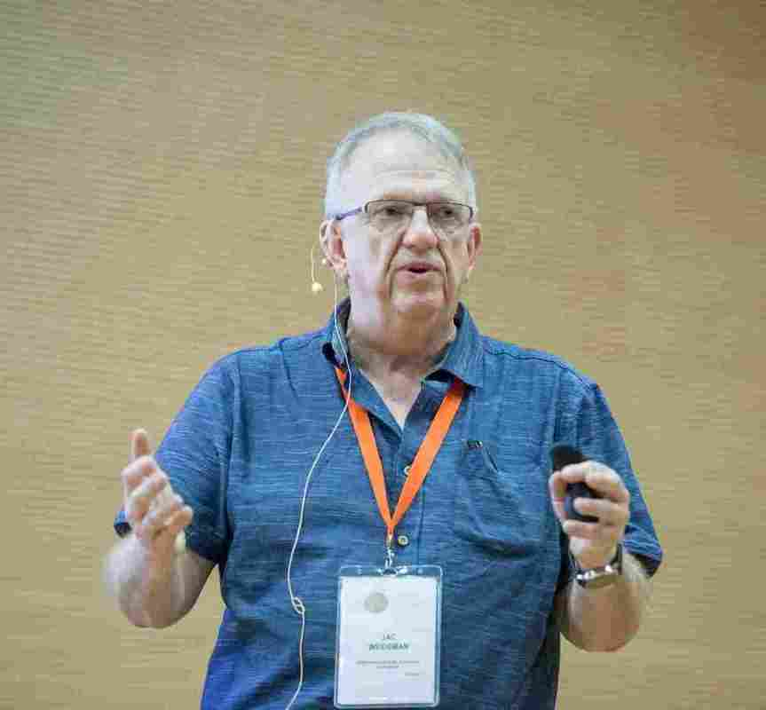 25. J.A.C. Weideman.
 26. Xiao Ping Wang.
26. Xiao Ping Wang.
27. Karen Willcox.
Conferencia Olga Taussky-Todd en el Palacio de Congresos: Françoise Tisseur.
Conferencia pública en el Auditorio Reina Sofía: Víctor M. Pérez García.
Izquierda, Palacio de Congresos. Derecha, Auditorio Reina Sofía (foto de Antonio Baeza).
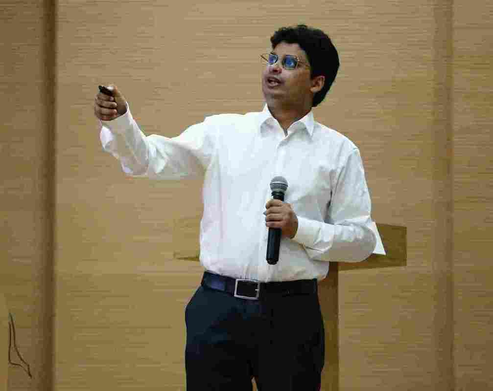 Premio Collatz ICIAM 2019: Siddartha Mishra.
Premio Lagrange ICIAM 2019: George Papanicolaou.
Premio Maxwell ICIAM 2019: Claude Bardos.
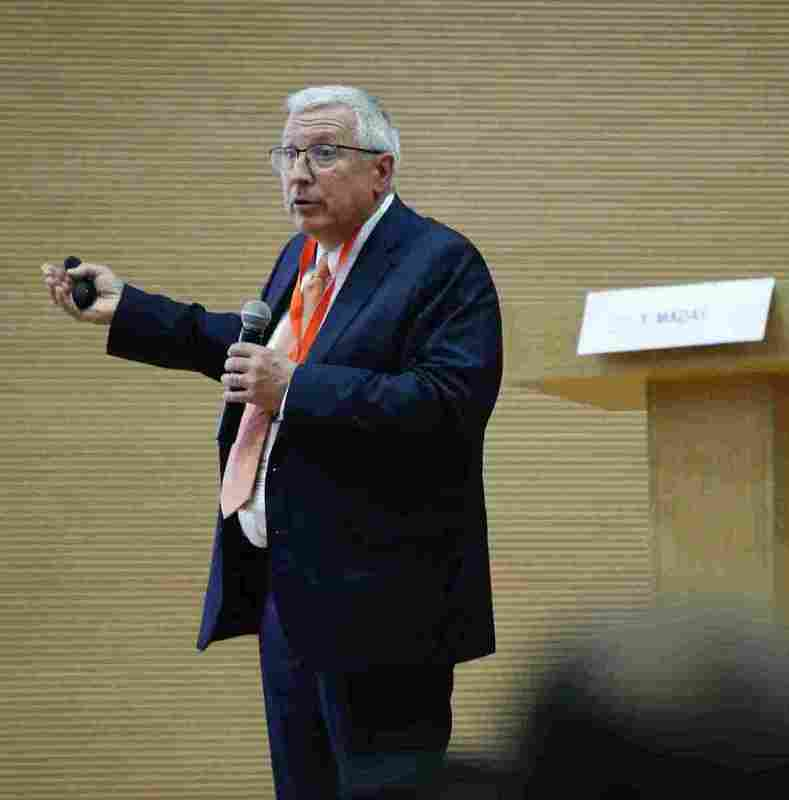 Premio Pionero ICIAM 2019: Yvon Maday.
 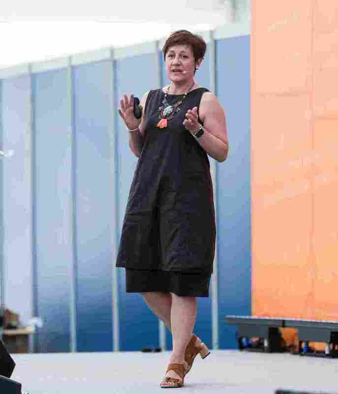
Premio Su Buchin ICIAM 2019: Giulia di Nunno.
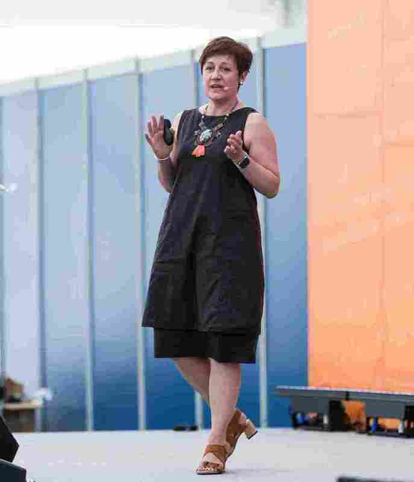
Premio Su Buchin ICIAM 2019: Giulia di Nunno.

Weinan E. A la izquierda, el profesor Weinan E recibe el premio Peter Henrici SIAM 2019 de manos de Lisa Fauci, presidenta de la SIAM.
Margaret H. Wright. A la izquierda, la profesora M. H. Wright recibe el premio John von Neumann SIAM 2019 de manos de Lisa Fauci, presidenta de la SIAM (foto por cortesía de la SIAM).
 Catherine Sulem. A la izquierda, la profesora C. Sulem recibe el premio Conferencia AWM-SIAM Sonia
Kovalevsky de manos de Ami Radunskaya, anterior presidenta de la Association for Women in
Mathematics (AWM) y de Lisa Fauci, presidenta de la SIAM (foto por cortesía de la SIAM).
Catherine Sulem. A la izquierda, la profesora C. Sulem recibe el premio Conferencia AWM-SIAM Sonia
Kovalevsky de manos de Ami Radunskaya, anterior presidenta de la Association for Women in
Mathematics (AWM) y de Lisa Fauci, presidenta de la SIAM (foto por cortesía de la SIAM).
Francisco Ortegón Gallego
Universidad de Cádiz
_______________
El viernes 19 de julio a las 16h45’ estaba programado el acto de clausura del ICIAM 2019 en el imponente salón de actos de la Facultad de Medicina y Odontología de la Universidad de Valencia. En este mismo salón de actos se habían impartido conferencias del ICIAM todos los días del congreso.
Mientras me aproximaba a la Facultad de Medicina y Odontología estuve reflexionando en que éste era justamente el acto de despedida, la última actividad pública programada del ICIAM, tras los días de desarrollo del congreso, de enorme actividad frenética, y tras los casi siete años de incesante trabajo de preparación y organización de este evento que tan brillantemente han llevado a cabo, en representación de la SEMA, todos los miembros de la Asociación ICIAM 2019, con Tomás y Rosa al frente, los distintos comités creados para tal fin, ensalzando en particular al comité organizador local que, entre otras muchas cosas, tuvo que resolver en muy poco tiempo el gran problema que supuso el cambio de la sede para la celebración de la ceremonia de apertura, y, por supuesto, sin olvidar a los 172 voluntarios del ICIAM 2019 que apoyaron in situ el normal desarrollo de este gran evento. También, tenía hecha la idea de que la ceremonia de clausura sería un acto sencillo, breve y, sobre todo, con un número no muy grande de asistentes. Sabía que la ceremonia incluiría el acto de traspaso de la bandera del ICIAM por parte de Tomás Chacón al profesor Shin’ichi Oishi, Universidad de Waseda, máximo responsable de la organización del ICIAM 2023, Tokio. Pues bien, desde mi visión personal, la ceremonia de clausura fue un acto excelentemente elaborado y preparado, que se extendió durante cuarenta y cinco minutos que pasaron volando, y al que asistió un gran número de participantes que abarrotaron las gradas del salón de actos. Si tengo que calificar esta ceremonia de clausura con una palabra, diré que fue, al menos para mí, fundamentalmente emotiva. Posiblemente, toda la carga de tensión durante las últimas jornadas se desinflaron en esos momentos; pero también las intervenciones de María Jesús Esteban, Tomás Chacón, Rosa Donat y la entrega de la bandera hicieron lo suyo.
Llegué al salón de actos con un cuarto de hora de adelanto y me sorprendió la cantidad de personas que ya iban ocupando las gradas, mucho más de la mitad del aforo, y seguían entrando más a buen ritmo. Ya estaban allí, en primera fila, María Jesús, Rosa y Tomás, y me dirigí a ellos directamente. Les comenté que era una sorpresa agradable el ver a tanta gente llenando la sala para asistir a la clausura del congreso, y Tomás me confirmó que estaban encantados y que, de hecho, no se lo esperaban, pues en otras ocasiones, al acto de clausura solían asistir «cuatro gatos». Pensé entonces que era el momento perfecto para hacer algunas fotos, para este Boletín, a los protagonistas principales del acto, pues, tras la ceremonia, difícilmente podría haberlos tenido a todos ellos juntos. Y así, delante del atril, se colocaron, primero solo Rosa y Tomás y luego se unieron María Jesús, el profesor Ya-xiang Yuan, Academia de Ciencias China, como próximo presidente del ICIAM y, finalmente, Shin’ichi Oishi, que tomaría el relevo de la organización del próximo ICIAM 2023 en Tokio (figura ??). Cuando terminé la sesión de fotos volví la vista atrás y me di cuenta de la cantidad de colegas que se arremolinaban para tomar también la foto del momento al distinguido grupo.
El acto comenzó con la intervención de María Jesús Esteban. Entre otras cosas, felicitó a todas las personas que se habían involucrado en la organización de este gran congreso y que tan bien habían contribuido al éxito del mismo. Solicitó a todos los organizadores que se encontraban en la sala bajaran y se mostraran al público, el cual reaccionó con una extensa y gran ovación (figura ??). Luego intervino Tomás Chacón, que resumió en cifras los impresionantes logros del ICIAM 2019: 3980 participantes (el máximo histórico en un ICIAM) provenientes de más de cien países; se han impartido 3.650 ponencias distribuidas en 320 minisimposios temáticos y 22 minisimposios industriales, aparte de otras 600 ponencias fuera de estos minisimposios; y se han presentado 250 pósteres. Para ello, fue necesario establecer una logística que permitiera organizar estas presentaciones en 90 sesiones simultáneas. Por otro lado, se celebró una jornada dedicada a la matemática industrial en la que estuvieron representadas catorce grandes empresas, impartiendo una charla cada una de ellas: National Bank of Canada, Banco Santander, NORS Automotive, Robert Bosch GmbH, EDF R&D, Siemens, W.L. Gore & Associates, SilicioFerrosolar, Microflown Technologies, Reganosa, FUJITSU LABORATORIES LTD., NEC Laboratories Europe, National Institute of Standards and Technologie (NIST) y Los Alamos National Laboratory.
A continuación tomaron la palabra la profesora Rosa Donat, el profesor Ya-xiang Yuan y, finalmente, el profesor Shin’ichi Oishi, quien hizo una presentación de la Universidad de Waseda, Tokio, sede del ICIAM 2023. La Universidad de Waseda fue fundada en 1882, primero con el nombre de Escuela de Tokio, diez años más tarde como Escuela de Waseda y, finalmente, desde 1902 con la designación actual. La Escuela de Ciencias e Ingeniería se creó en 1909. Actualmente, cuenta con casi 5.500 profesores y más de 50.000 alumnos, de ellos casi 42.000 son de grado.
Y como ya he mencionado antes, la culminación de la ceremonia de clausura consistió en la entrega de la bandera del ICIAM, que Tomás recibió en el ICIAM 2015 de Pekín y que ahora trasladaba al profesor Shin’ichi Oishi como máximo responsable de la organización del siguiente ICIAM 2023 (figura ??).
En conclusión, resultó ser un acto muy emotivo en el que se pusieron de manifiesto la gran labor y esfuerzo en la organización de este magnífico evento, así como los excelentes logros conseguidos a lo largo de la semana.
¡Enhorabuena Tomás, Rosa y María Jesús! Y a todos los que habéis contribuido al gran éxito del ICIAM 2019. ¡Bravo!
1http://www.ime.unicamp.br/~agacse2018/
2https://mat-web.upc.edu/people/sebastia.xambo/agacse2015/
3Todas las fotos de esta sección son de la organización ICIAM 2019, salvo que se indique otra autoría.